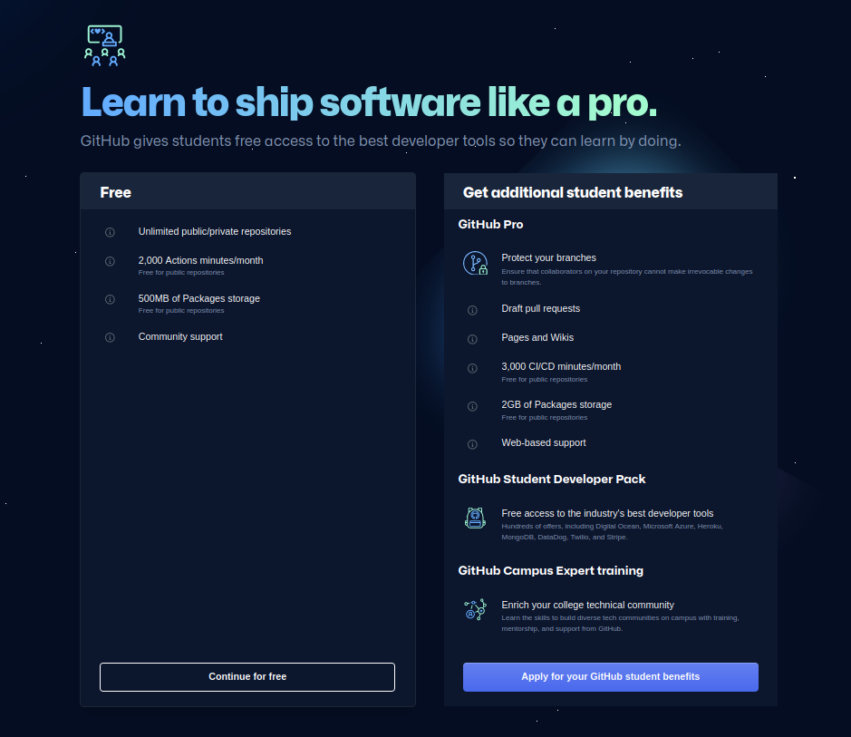
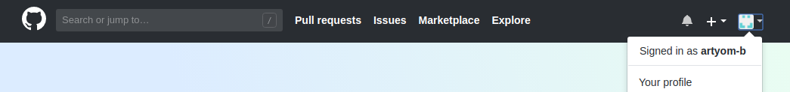
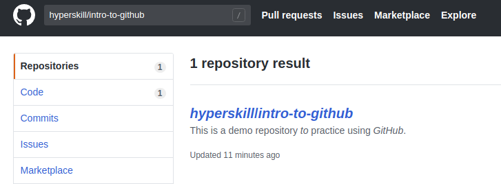
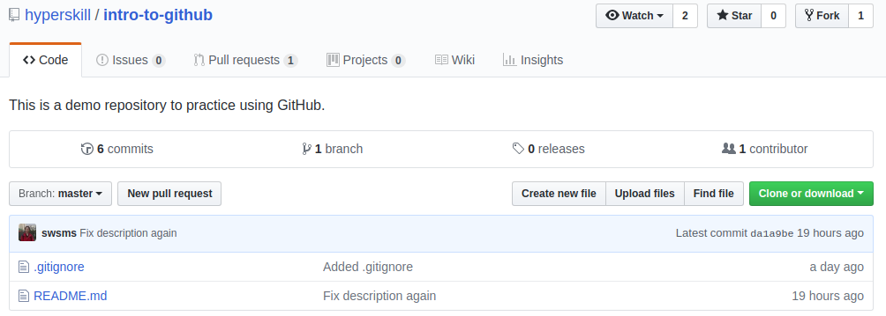

GitHub is a code hosting platform. It is a place where developers can store their projects and work together to develop new projects. It's easier to control program versions and collaborate this way. GitHub is based on a popular version control system called Git, and provides some additional features such as a web interface, collaboration tools, an issue tracker, project statistics, and more.
By 2020, GitHub is the largest host of source code in the world. You may find many popular open-source projects hosted on GitHub and make your contribution.
In this lesson, you will learn how to start using GitHub through your web browser. We recommend you to repeat everything that we do here step by step.
To complete this lesson, first, you need to create a free account on GitHub (or use an existing one). The profile is your public page on GitHub just like your social network profile. When you're looking for a job as a programmer, potential employers might check your GitHub profile and take it into account as they consider you for the job.
When you create an account, in the last step choose "Continue for free":
After you complete the registration, you will see a dashboard. At the top of the page, you will find the search box and information about your profile.
You can open your profile and make changes (for example, you can add a bio or upload a picture).
GitHub hosts millions of projects written in different programming languages. Each project is placed in its own container called a repository (repo) that can store code, configurations, datasets, pictures, and other files included in your project. Any changes to the files within a repo will be tracked via version control.
Just after you have got your account you do not have any repositories. In order to create one, type "Create a repository" and follow the instructions.
If you want to find some specific repository of a project, type its name or part of the name in the search box. You will see a list of suitable repositories.
Sometimes, the name of a repository might be too long or there may be lots of repositories with the same name. For example, try searching for intro-to-github without hyperskill/.
Usually, you have a link to a repository. Many open-source projects publish links on their personal websites, or your colleagues may give you a link to a repository of a project.
Here is the direct link to our existing demo repository. Go ahead and open this repo and take a look at its internal structure.
There are two files in the Code tab. README.md is a file that describes the project; every repository should have this file. GitHub finds this file and displays its content below the repo. The other file is .gitignore; it specifies which files and directories Git should ignore.
Although this repo is public, you cannot modify files in this repo directly, because you have read-only access to any public repository. To modify the files, you must be a collaborator on this project.
The Pull requests tab contains proposals for changes in the files that are in the repository (adding, deleting, or modifying files). The owners of the repo can review a request and approve your changes if they are good enough.
You can create an Issue or make a Pull request (PR) to contribute to the project, even if you are not a collaborator.
In our project, the Wiki tab is empty, but it is actually where the documentation of the project (how to use it, how it was designed, its core principles, and so on) should be stored. Whereas a README.md is to quickly let readers know what your project can do, wikis help provide additional information.
We don't discuss the Projects tab in this lesson.
In the Insight tab you can find stats and information about the repository.
You may also look at the commit(s) which represent changes in the content of the repo. Here is a link to see it directly. We will learn more about commits further on.
GitHub is a web platform where people can store their projects as Git-repos. Using their web interface, you can create an account, a repo and search for repos of other projects. Every repo on the platform has several tabs inside, such as Code with README.md file, Pull requests where you can offer changes in the files, the Wiki tab with project documentation and Insights with statistics about the repository.